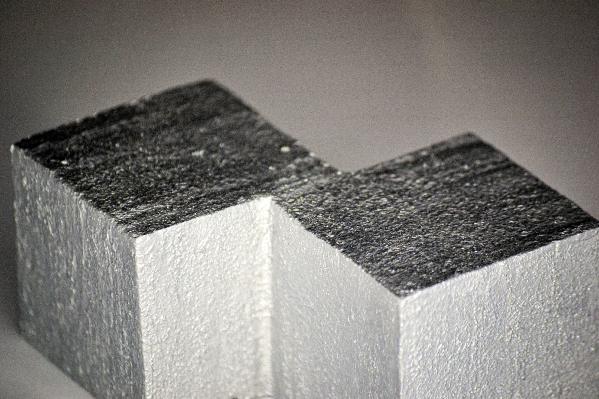

Abstract art does not aim to provide an accurate depiction of reality. Instead, it uses elements such as shapes, colors, forms, and gestural mark-making either to capture the essence of objects or to create art that has no direct connection to reality.
Minimalist artists de-emphasized personal expression, placing the art itself at the forefront. They challenged viewers to engage directly with the reality of the artwork, its medium, and its materials.

Geometric art employs geometric forms created from points, lines, angles, and shapes, ranging from simple triangles, squares, and circles to complex figures that may involve mathematical precision.